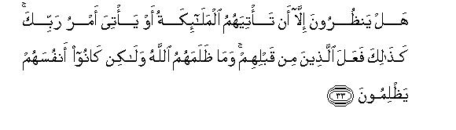
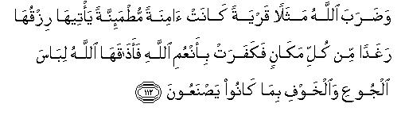
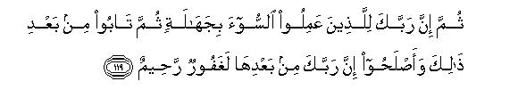

بسم الله الرحمن الرحيم
Sayyid Abul Ala Maududi - Tafhim al-Qur'an - The Meaning of the Qur'an
 16.
An Nahl (The Honey Bee)
16.
An Nahl (The Honey Bee)
The name, An-Nahl, of this Surah has been taken from v. 68. This is merely to distinguish it from other Surahs.
The following internal evidence shows that this Surah was revealed during the last Makkan stage of Prophethood:
v. 41 clearly shows that persecution had forced some Muslims to emigrate to Habash before the revelation of this Surah.
It is evident from v. 106 that at that time the persecution of the Muslims was at its height. Therefore a problem had arisen in regard to the utterance of a blasphemous word, without actual disbelief, under unbearable conditions. The problem was that if one did so how he should be treated.
vv. 112-114 clearly refer to the end of seven year famine that had struck Makkah some years after the appointment of the Holy Prophet as Allah's Messenger.
There is a reference to v. 116 of this Surah in VI: 145, and v. 118 of this Surah contains a reference to VI: 146. This is a proof that both these Surahs (VI and XVI) were sent down in the same period.
The general style of the Surah also supports the view that this was revealed during the last stage at Makkah.
All the topics of the Surah revolve round different aspects of the Message, ie., refutation of shirk, proof of Tauhid, and warning of the consequences of the rejection of and opposition and antagonism to the Message.
The very first verse gives direct and strict warning to those who were rejecting the Message outright, as if to say, "Allah's decision has already been made concerning your rejection of the Message. Why are you then clamoring for hastening it? Why don't you make use of the respite that is being given to you!" And this was exactly what the disbelievers of Makkah needed at the time of the revelation of this Surah. For they challenged the Holy Prophet over and over again: "Why don't you bring that scourge with which you have been threatening us! For we have not only rejected your Message but have been openly opposing it for a long time." Such a challenge had become a by-word with them, which they frequently repeated as a clear proof that Muhammad (Allah's peace be upon him) was not a true Prophet.
Immediately after this warning they have been admonished to give up shirk, for this false creed was the main obstacle in the way of the Message. Then the following topics come over and over again, one after the other:
Very convincing proofs of Tauhid and refutation of shirk have been based on the plain signs in the universe and in man's own self.
The objections of the disbelievers have been answered, their arguments refuted, their doubts removed and their false pretexts exposed.
Warnings have given of the consequences of persistence in false ways and antagonism to the Message.
The moral changes which the Message of the Holy Prophet aims to bring practically in human life have been presented briefly in an appealing manner. The mushriks have been told that belief in Allah, which they also professed, demanded that it should not be confined merely to lip service, but this creed should take a definite shape in moral and practical life.
The Holy Prophet and his companions have been comforted and told about the attitude they should adopt in the face of antagonism and persecution by the disbelievers.

In the name of Allah, the Compassionate, the Merciful.
[1-2] Allah's "Judgment" has come:1 so do not clamor for hastening it; He is free from every defect, and exalted high above the shirk that they are practicing.2 He sends down by His command through His angels the Spirit3 on that one of His servants whom He chooses,4 (bidding), “warn the people that there is no other deity than I. Therefore, fear Me.”5

[3] He has based the creation of the heavens and the Earth on truth; He is exalted high above that shirk which they are practicing.6

[4-9] He created Man from an insignificant sperm-drop, and behold, by and by he became a manifest disputant.7 He has created cattle, which provide you with clothing and food, and there are other benefits also for you in them; they look pleasant when you drive them to the pasture in the morning and bring them home in the evening. They carry your burdens to far-off lands, which you could not reach without painful toil. Indeed your Lord is All-Compassionate and All-Merciful. He has created horses, mules and donkeys so that you may ride them, and they may add splendor to your life. He creates for you many other things, of which you have no knowledge at all.8 Allah has taken upon Himself to show the Right Way, when there exist crooked ways too.9 He would have guided all of you aright, if He had so willed.10
[10-11] It is He, Who sends down for you water from the sky, which provides drinking water for you and brings forth fodder for your cattle. And thereby He grows for you crops and olives and date-palms and vines and different kinds of many other fruits. Surely there is a great Sign in this for those people who ponder.
[12-13] He has subjected to your service the day and the night and the sun and the moon: likewise all the stars are subjected by His Command. In this there are many Signs for those who make use of their common sense. And in the things of different colors He has created for you in the Earth, there is indeed a Sign for those who learn lessons from them.
[14] It is He Who has subjected the sea to your service so that you may get fresh flesh from it to eat and bring out of it articles of ornament, which you wear, and you see that the ship sails her course through it. He has done all this so that you may seek of His bounty11 and show gratitude to Him.
[15-16] He has driven mountains firmly into the earth lest it should turn away from its usual course along with you:12 He has caused rivers to flow and made natural ways13 so that you may be directed aright. He has placed landmarks14 to direct people, and by stars, too, they are directed aright.15
[17-19] Is, then, He, Who creates, like those who create nothing?16 Do you not understand even this much? If you try to reckon up Allah's blessings, you cannot count them. Indeed, He is Forgiving and Compassionate17 though He knows all that you conceal and all that you reveal.18
[20-21] And the other beings, whom the people invoke, create nothing; nay, they are themselves created. They are dead, not living, and they do not know at all when they shall again be raised to life.19
[22-23] Your Deity is One Allah, but the hearts of those, who do not believe in the Hereafter, are given to denial, and they are puffed up with pride.20 Surely Allah has full knowledge of all their deeds, both secret and open. He does not like those people, who are puffed up with pride.
[24-26] And21 when they are asked, "What is it that your Lord has sent down?" they say these are mere fairy tales of the ancients.22 They say such things so that they should bear the full brunt of their own burdens on the Day of Resurrection together with some of the burdens of those whom they are leading astray in their ignorance. Behold! what a heavy responsibility they are taking on themselves! Many of those who have gone before them also contrived such cunning devices to defeat the Truth, but behold! Allah smote the edifice of their evil designs at its foundations and its roof fell down upon their heads from above them, and the scourge overtook them from the direction they little dreamed that it would come.
[27-29] Then on the Day of Resurrection Allah will disgrace and degrade them. He will say to them: "Now where are My partners concerning whom you used to dispute (with the truthful)?"Those,23 to whom Knowledge had been given in the world, will say, "Today there is ignominy and misery for the disbelievers." Yes24 , this is for those disbelievers, who, while they are still engaged in wronging themselves, shall surrender themselves when seized by the angels,25 saying, "We were doing nothing wrong at all." The angels will retort, "What, dare you deny this! Allah is fully aware of what you were doing. Now, go and enter the gates of Hell, where you shall abide for ever."26 The fact is that a very miserable abode it is for the haughty ones.
[30-32] On the other hand, when the God-fearing people are asked, "What is it that has been sent by your Lord?" they say, "It is the best thing that has been sent down."27 There is good for those righteous people who do good works in this world, and far better is their abode in the Hereafter." Blessed indeed is the dwelling place for the pious people. There will be gardens for their permanent residence into which they will enter: canals will be flowing underneath them: above all, they will find there everything as they would desire:28 this is the reward for those pious people whose souls are received in a pure state, by the angels, who welcome them, saying, "Peace be on you: enter into Paradise as the reward of your good deeds."

[33-34] O Muhammad! are these people still waiting, though now nothing has been left but that angels should come or your Lord's judgment be passed on them?29 Many people before them behaved audaciously like them, and had to take the consequence: it was not Allah Who was unjust to them but they were unjust to themselves. In the end their evil deeds brought upon them the consequences and that very thing, they used to scoff at, overwhelmed them.
[35-37] The mushriks say, "Had Allah willed, neither we nor our forefathers would have worshiped any other than Allah nor made anything unlawful without His will."30 Such excuses were put forward also by those who went before them.31 Have the Messengers any more responsibility than to convey the Message clearly? Accordingly, we sent to every community a Messenger, saying, "Worship Allah and keep away from the taghut."32 After that Allah showed guidance to some of them, while deviation took hold of others.33 So, roam about in the earth and behold what has been the end of the rejectors of the Messengers.34 O Muhammad! howsoever desirous you may be of their guidance, (know) that Allah does not show guidance to those whom He lets go astray, and such people have no helpers.
[38] They solemnly swear by God with their most sacred oaths that "Allah will never raise him who once is dead".Why will He not raise? It is a promise He has made binding on Himself, but most people do not know it.
[39-40] And It must be fulfilled so that He may reveal to them that thing about which they are differing, and that the disbelievers might know that they were liars.35 (As regards its possibility.) when We desire to bring a thing into existence, We need only say, "Be", and it is there.36
[41-42] As for those, who after persecution, left their homes for the sake of Allah, We will give them a good abode in this world, but the reward in the Next World is far better.37 Would that those who have borne oppression with fortitude, and are performing their mission with full trust in their Lord, knew (what a happy end awaits them!)
[43-44] O Muhammad! whenever We sent before you Messengers to whom We revealed Our Messages, they were but human beings.38 You (people of Makkah) may inquire from the people who possess Admonition39 if you do not know this yourselves. We sent the former Messengers with clear Signs and Books, and now We have sent the Admonition to you (O Muhammad!), so that you should make plain and explain to the people the teachings of the Book which has been sent for them;40 and so that they (themselves) should ponder over it.
[45-47] What! Do those people, who are practicing evil devices (to oppose the Message), feel fully secure from the danger that Allah will cause them to sink into the earth? Or that He will bring scourge upon them from whence they little suspect that it will come, or that He will seize them all of a sudden while they are roaming about fearlessly, or that He will seize them when they themselves are on the alert about the impending danger? These people have no power to frustrate His plans. The fact is that your Lord is very Lenient and Compassionate.
[48-50] And don't they observe anything created by Allah how it casts its shadow right and left, prostrating itself before Allah?41 Thus all things express their humility. All the animate creation in the heavens and the earth and all the angels prostrate themselves in adoration before Allah;42 they do not show any arrogance at all; they fear their Lord Who is above them, and do whatever they are bidden.
[51-52] Allah has enjoined: "You shall not take to yourselves two gods;43 for He is the only One God: so fear Me." To Allah belongs everything in the heavens and the earth: His way is being followed in the universe.44 Will you, then, fear any other than Allah?45
[53-55] Whatever blessing you enjoy is from Allah alone; then, when you have a hard time, you with your supplications, run to Him for help.46 But no sooner does He relieve you of your distress than some of you begin to associate others with Him (in gratitude47 for this favor), to show ingratitude for Allah's favor. Well! you may enjoy yourselves for a while for you shall soon come to know (its consequences.)
[56] These people assign shares from Our provisions to those, of whom they know nothing.48 49 By God, you shall most surely be called to account about the falsehood you had forged.
[57] They assign daughters to Allah;50 praise be to God! as for themselves, they would like to have what they desire.51
[58-60] When anyone of them is given the good news of a daughter, his face grows dark after this news and he chokes with inward gloom: he hides himself from people because of this disgrace, asking himself whether he should suffer his daughter with disgrace or bury her alive. What an evil judgment they have about Allah!52 Bad attributes should be ascribed to those who do not believe in the Hereafter. As regards Allah, all excellences are for Him; for He is the All-Powerful, the All Wise.

[61-62] Had Allah seized people on the spot for their transgression, He would not have left alive any living creature on the Earth: but He respites all for an appointed term. When their appointed time comes, they shall not be able to put it back or forward by a single moment. Yet they assign to Allah what they themselves dislike, and their tongues utter the lie that their lot shall be a fair one anyhow. Nay, only one thing awaits them, and that is the fire of Hell, wherein most certainly they shall be hastened.
[63-64] By God, O Muhammad, We sent Messengers before you to many communities (and it has always been so that) Satan made their evil deeds seem fair to them, (and so they did not believe in the Message). The same Satan has this day become their patron also and they are incurring the most painful punishment. We have sent down this Book to you so that you may reveal to them the reality of the differences in which they are involved. Moreover, this Book has been sent down as guidance for and blessing to those who believe in it.53
[65] (In every rainy season you see that) Allah sent down water from heaven, and by it gave life to the earth after it had been dead: indeed there is a Sign in this for those who listen (to the Message).53a
[66] And surely there is a lesson for you in the cattle: We give you to drink of that which is in their bellies between filth and blood, that is, pure milk,54 which is very pleasant to those who drink it.
[67] (Likewise) We give you from date-palms and vines a drink from which you derive intoxicants and also pure food:55 indeed there is a Sign in this for those who make use of their. common sense.
[68-69] And behold! Your Lord has inspired the bee56 with this "Build thy hive in the mountains, trees and in the creepers over trellises: then drink nectar from every kind of fruit, and follow the ways made smooth by the Lord."57 From its belly comes out a fluid of varying hues wherein is healing for mankind.58 Here is indeed a Sign for those people who ponder over it.59
[70] And consider this: Allah created you: then He causes your death;60 and some one from among you is carried on to abject old age so that after knowing all he could, he may no longer have any knowledge of it.61 The fact is that Allah alone is All-Knowing, All-Powerful.
[71] Consider also this: Allah has favored some of you above others with provisions, but those who have been favored with this, do not give away their provisions to their slaves so that both may become equal in the provision. What! do they then deny to acknowledge Allah's favor?62
[72-74] It is Allah alone, Who has made wives for you from your own species and He alone bestowed upon you sons and grandsons from those wives, and provided you with good things to eat. What, do they then (even after seeing and knowing all this,) believe in falsehood,63 and deny Allah's favors64 and, instead of Allah, worship those who do not provide them with anything from the heavens or the earth, nor have any power to do so? Make no comparisons, therefore, with Allah.65 Allah knows but you do not know.
[75] Allah cites a similitude66 (of two men): one of them is a slave, who is owned by another and has no power over anything. There is the other man whom We Ourselves have provided with a fair provision from which he freely spends openly and secretly. (Ask them): "Are these two men equal?"May God be praised!67 But most people do not understand (this simple thing).68
[76] Allah cites another similitude of two men. One of them is dumb and deaf and cannot do any work, and has become a burden upon his master; wherever he dispatches him, he does nothing useful. There is the other one, who enjoins justice and follows the Right Way. (Ask them): "Are these two men equal?"69
[77] Allah alone has the knowledge of all the "unknown" things of the heavens and the earth.70 As regards the coming of the Resurrection, it will not take more time than is taken in the twinkling of an eye rather less than this;71 the fact is that Allah has power over all things.
[78] Allah brought you out of your mothers' wombs in this state that you knew nothing: He gave you ears and eyes and thinking minds72 so that you may be grateful.73
[79] Have they never observed how the birds are poised in the vault of heaven? Who holds them up but Allah? There are many Signs in this for those people who believe.
[80] Allah has made your homes places of rest and peace for you: and from the skins of cattle He has made for you houses74 which you find light during your journey and at the time of your halt.75 And from their soft fur and wool and hair, He has furnished you with many things for clothing and domestic service which are very useful to you during your prescribed term of life.
[81-83] Allah has made for you from the many things He has created shelter from the sun. He has created for you places of refuge in the mountains and blessed you with such garments as protect you from heat76 and garments which shield you in your fights.77 Thus He perfects His blessings on you,78 so that you should submit to Him. But if they give no heed to you, O Muhammad! (you need not worry) for your only responsibility is to convey the plain Message of truth. They recognize the blessing of Allah, yet they deny it,79 for the majority of them are not inclined to accept the Truth.
[84-88] (Do they realize what will happen) on the Day when We shall raise up a witness80 from every community? Then the disbelievers shall not be given any opportunity to put forward any excuses81 nor shall they be asked to show penitence.82 When once the transgressors will see the torment, their punishment shall neither be lightened for them after this nor shall any respite be given to them. When the people, who had committed shirk in this world, will see those whom they had made associates with Allah, they will say, "Our Lord! here are those associate-deities whom we used to invoke beside Thee". At this their deities will retort, "You are liars."83 At that time all of them will proffer submission before Allah and all they used to forge in this world shall vanish from them.84 We will inflict double torment85 on those who followed the way of disbelief and hindered others from the Way of Allah on account of the chaos they spread in this world.
[89] (O Muhammad, warn them of) the Day when We shall call a witness from among every community to testify against it. And We shall call you to testify against these people; (that is why) We have sent down .to you this Book which makes plain everything86 and is guidance, blessing and good news to those who have surrendered themselves entirely.87
[90-93] Allah enjoins justice, generosity and kind treatment with kindred,88 and forbids indecency, wickedness and oppression.89 He admonishes you so that you may learn a lesson. Fulfill your covenant with Allah when you have made a Covenant with Him, and do not break your oaths after they have been confirmed and you have made Allah your witness. Allah is fully aware of all your actions. Do not behave like that woman who had spun yarn laboriously and then had herself broken it into pieces.90 You make your mutual oaths a means of mutual deceit in your affairs so that one people might take undue advantage over the other whereas Allah puts you to trial by these pledges.91 Allah will certainly reveal to you the truth about all your differences on the Day of Resurrection.92 Had Allah so willed (that you may not have any differences,) He would have made you all a single community,93 but He leads astray whom He will and shows guidance to whom He will.94 And be sure that He will take you to account for all your doings.
[94] And (O Muslims,) do not make your oaths the means of deceiving one another lest (someone's) foot should slip after being firmly fixed95 and you may suffer the consequences of debarring other people from the Way of Allah, and undergo a severe torment.
[95-97] Do not barter away the Covenant96 of Allah for paltry gains:97 Indeed what is with Allah is far better for you if you knew it. Whatever is with you is transitory and whatever is with Allah is ever-lasting. And We will reward those, who practice fortitude98 according to their best deeds. Whosoever does righteous deeds, whether male or female, provided he is a Believer, We will surely grant him live a pure life in this world.99 And We will reward such people (in the Hereafter) according to their best deeds.100
[98-100] Then, when you begin to recite the Qur'an, seek Allah's refuge against the accursed Satan,101 for no power has he over those who believe and put their trust in their Lord; he has power only over those who make him their patron and practice shirk by his temptation.
[101-102] And when We send down one verse to elaborate upon the other-and Allah knows best what to send down, they say, "You forge this Qur'an yourself."102 The fact is that most of them do not know the reality. Tell them, "The Holy Spirit has brought it down piecemeal103 intact from my Lord so that He may make firm the faith of those who have believed,104 and to show the Right Way,105 and to give good news to those who surrender themselves to Allah."106
[103-105] We know very well what they say about you: "Surely a certain person teaches him."107 But the person to whom they allude speaks a foreign tongue, and this (Qur'an) is in plain Arabic. It is a fact that Allah does not show guidance to those who do not believe in His Revelations, and there is a painful torment for them. (The Prophet is not forging any false thing but) those, who do not believe in the Revelations of Allah, are inventing falsehoods108 they are indeed the liars.
[106-109] Whoso is forced to disbelieve after believing, while his heart is convinced of the Faith, (he shall be absolved) but whosoever accepts disbelief willingly, he incurs Allah's wrath, and there is severe torment for all such people.109 This is because they preferred the life of this world to the life in the Hereafter, and Allah does not show the Way of salvation to those people who are ungrateful! Allah has sealed the hearts, the ears and the eyes of such people and they have become neglectful: therefore, it is inevitable that they should be losers in the Hereafter.110
[110-111] On the other hand, Allah is most surely Forgiving and Compassionate towards those people who, when they were persecuted (because of their Faith), left their homes and migrated and struggled hard in the Way of Allah and practiced fortitude.111 (All these will be judged) on the bay when everyone will be pleading for himself only and everyone will be recompensed fully for one's deeds and none shall be unjustly dealt with in the least.

[112-113] Allah cites the instance of a habitation: it was enjoying a life of peace and security and was receiving its provisions in abundance from every quarter. Hut when it began to show ingratitude towards the favors of Allah, He made its inhabitants taste the consequences of their doings, and inflicted misfortunes of hunger and fear on them. A Messenger came to them from among themselves but they treated him as an impostor. At last a torment overtook them while they had become guilty of iniquity.112
[114-117] So, O people, eat of the lawful and pure provisions with which Allah has blessed you and show gratitude113 to Allah for His favors, if you are sincerely obedient to Him.114 Allah has forbidden only these things: do not eat what dies of itself nor blood nor swine flesh nor what has been slaughtered in any name other than Allah. But if forced by hunger one eats of any of these forbidden things, provided he has no intention of breaking the Divine Law or of transgressing the limits by taking more than what is absolutely indispensable, one may expect mercy, for Allah is very Forgiving and very Compassionate.115 Do not ascribe lies to Allah by decreeing with your tongues, "This is lawful and that is unlawful"116 for those people who ascribe lies to Allah can never come to any good. (They should remember that) the pleasures of this world are transitory and in the end there is a painful torment for them.

[118-124] To the Jews We had especially forbidden the things117 We have already related to you,118 and it was not We who imposed this hardship on them, but they imposed the hardship themselves. Nevertheless, your Lord is Forgiving and Compassionate towards those who have repented and mended their ways after they had committed evil in ignorance. The fact is that Abraham was a community in himself:119 he was obedient to Allah and had turned to Him exclusively. He was never a mushrik. he was always grateful for Allah's favors. Accordingly Allah chose him and showed him the Right Way. Allah blessed him with goodness in this world and most surely he will be among the righteous in the Hereafter. Then We sent down this Revelation to you: "Follow the way of Abraham exclusively" and he was not one of the mushriks.120 As regards the Sabbath, We imposed this on those who differed about its observance.121 Surely your Lord will decide between them on the Day of Resurrection about all those things in which they have been differing.
[125-128] O Prophet invite to the way of your Lord with wisdom and excellent admonition122 and discuss things with people in the best manner.123 Your Lord knows best who has gone astray from His Way and He knows best who is rightly guided. And if you retaliate, let your retaliation be to the extent that you were wronged, but if you endure it with patience, it is indeed best for those who endure with patience. O Muhammad, go on performing your mission with fortitude-and you can practice fortitude only with the help of Allah-do not be grieved at their doings and do not distress yourself at their intrigues, for Allah is with those people who fear Him and adopt the righteous attitude.124
1That is, "The time for final `Judgment' has come near." As regards the use of the past tense in the original, this may be to show certainty of its occurrence in the near future or to emphasize the fact that the rebellion and the wrong deeds of the Quraish had become so unbearable that they warranted that the time for decisive action had come.
Here question arises as to what that "Judgment" was and how it came. We are of the opinion (and true knowledge is with Allah alone) that that "Judgment" was Hijrat (the Migration) of the Holy Prophet from Makkah. For a short time after this Revelation he was bidden to emigrate from there. And according to the Qur'an, a Prophet is bidden to leave his place only at that time when the rebellion and antagonism of his people reaches the extreme limit. Then their doom is sealed, for after this Allah's punishment comes on them either as a direct scourge from Him, or they are destroyed by the Prophet and his followers. And this did take place actually. At the occasion of the Migration, the people of Makkah regarded it as a victory for themselves, but in fact it turned out to be a defeat for shirk and disbelief which were totally uprooted within a decade or so after the Migration not only from Makkah but from the rest of Arabia as well.
2In order to understand the interconnection between the first and the second sentences, one should keep in view the background. The challenge of the disbelievers to the Prophet, `to hasten Divine Judgment',was really based on their assumption that their own religion of shirk was true and the religion of Tauhid presented by Muhammad (Allah's peace be on him) was false; otherwise, they argued, the Divine scourge with which he threatened them would have come upon them long before because of their disbelief and rebellion, if there had been the authority of Allah behind it. That is why after the declaration of the "Judgment," their misunderstanding about the cause of delay in the punishment was removed, as if to say, "You arc absolutely wrong to assume that punishment has not been inflicted on you because your creed of shirk is true, for Allah is fret from and far above shirk and has no partner."
3This means "the Spirit of Prophethood with which a Prophet is imbued in order to fulfill his Mission by word and deed. The Qur'an has called this the Spirit in several places, for this has the same relation to the Mission of a Prophet and his moral life, which the soul has to the physical human life."
4As one of the things, which prompted the disbelievers to challenge the Holy Prophet for scourge, was their presumption that he was not a true Prophet, Allah told them categorically that he was a true Prophet, who had been imbued with the "Spirit" which We Ourself had sent down on him.
"Allah sends down the Spirit on..... He chooses." This is the answer to the objections which the chiefs of the Quraish used to raise against the Holy Prophet: Had Allah wanted to send a Messenger to them, was there no one better than Muhammad (Allah's peace be on him), son of `Abdullah, for this mission? Why did He not choose one of the big chiefs of Makkah or Taif for the purpose? Such absurd objections needed no other answer than this that is why such an answer has been given in several places of the Qur'an as if to say "Allah knows best how to do His work, and does not stand in need of any advice from you. He chooses for His mission anyone whom He considers fit for it.
5This verse declares the essence of the "Spirit" of Prophethood, which is this: Godhead belongs to one Allah alone: so only He is worthy of fear. Therefore, there is no other anchor that might make fast and hold together human moral system than His fear. For it is the fear of His displeasure and His punishment, and the fear of the consequences of His disobedience which alone can act as a strong deterrent to restrain one from deviation. That is why mankind has been admonished: "Fear Me."
6That is to say, "The whole system of the Earth and the heavens is a witness to the truth of the doctrine of Tauhid and to the negation of shirk. You may look at anything in the universe and consider the system from any point of view you like, you will find proof of this fact that it is being run by one God and not by many gods. Then how is it that you believe in shirk when there is no proof whatsoever of this in the universe?
As a fitting sequence of this, proofs of Tauhid and refutation of shirk have been given from Man himself and from other signs in the universe, and it has also been shown that Prophethood is based on Truth.
7This has two meanings and both are meant here.
(1) Though Allah created man from an insignificant sperm-drop, he is capable of arguing and giving reasons in support of his claim.
(2) Man who has such an insignificant origin, has become so vain that he does not hesitate to dispute even with his Creator.
If considered in its first sense, it is a chain in the series of arguments given in many succeeding verses to prove the truth of the Message of the Holy Prophet. (Please refer to E.N. 15). If taken in the second sense, it is meant to warn man that he should not forget the insignificant origin of his existence while engaged in his rebellious arguments against his Creator. If he remembered the different stages of his humiliating birth and growth, he would consider many times before he assumed a haughty and rebellious attitude towards his Creator.
8That is, "There are many agencies which are working for the good of man but he is quite unaware of such servants and the services rendered by them."
9This contains an argument for Prophethood along with a proof of Tauhid and of Allah's Compassion and Providence. The argument is this:
There are many divergent ways of thought and action open for man to choose from. Obviously all these divergent ways cannot be straight ways, because there can be only one straight way; therefore, there can be only one right theory of life which is based on that way, and only one right way of life which is based on that right theory . Thus it is clear that the choice of the right way of life is man's most important and basic need, for its wrong choice would inevitably lead to his ruin. This is because all other things fulfill his animal needs only, but this is the greatest necessity of his life as a human being and without its fulfillment his life would be an utter failure.
Now, it cannot be expected that Allah Who made so many provisions, and on such a large scale, for the fulfillment of the animal life of man, did not make any arrangement for the fulfillment of this real and greatest necessity of man. Just as He has provided for all the necessities of his life, so He has also provided for this greatest need of his through Prophethood. If Prophethood is denied then it should be pointed out in what way Allah has fulfilled this basic need of man. Experience of centuries has shown that mankind has always blundered whenever it. has chosen a way of life by itself. This is because Man's wisdom and intelligence are limited, and he cannot depend on these for the choice of the right way of life. Above all, one cannot say that Allah has made no arrangement for this basic need of man, for this will be the greatest misconception of Allah that He may make most elaborate arrangements for man's animal life but should leave him in the lurch to search out a way for himself for the fulfillment of this most important and basic need.
10Here a question arises: "Why didn't Allah will to guide all the people aright inherently when He had taken upon Himself to show the Right Way ?" It is true that Allah could have imbued Man, like other creatures, with the inborn instinct and enabled him to choose the Right Way without conscious thought, experience or teaching. But this would have been against His will which was to create a being, having will and power and freedom to follow the Right Way or the wrong way, whichever he chose for himself. This is why he has been endowed with different means of knowledge and powers of conscious thought, deliberation and will, and has been empowered with the authority to make use of all powers in him and all things around him. Moreover, He has placed in him and all around him such factors as might lead him to guidance or deviation. All these things would have become meaningless, had he been created righteous by birth, and he could never have attained the heights of progress, which can be achieved only by the right use of freedom. That is why Allah has chosen Prophethood for Man's guidance, and left him free to follow or reject a Prophet. This is a test by means of which Allah judges whether Man accepts the guidance that is presented to him in a rational way."
11That is, "try to get your sustenance in lawful ways."
12This shows that the real function of mountains is to regulate the motion and speed of the Earth. We have come to this conclusion, for the Qur'an has made this benefit of mountains very prominent in many places. Therefore, their other benefits should be regarded as incidental.
13Natural ways are those routes which are formed along the banks of streams, ravines and rivers. Though the importance of these ways is great even in the plains, one feels their sore need, especially in the mountainous regions.
14This is a Sign of Allah that He has broken the monotony of land by placing conspicuous landmarks on it to distinguish different regions from one another. These have many benefits and one of these is to help guide travelers and navigators to their destinations. One also realizes the importance and value of these landmarks, when one is traveling through a sandy desert where there are hardly any objects to guide on the way, and one is liable to lose the way any time. One feels the lack of landmarks much more in the sea voyage. It is in the deserts and the seas that people realize the true significance of "......by stars, too, they arc directed aright to their destinations."
This verse contains arguments for Tauhid. Providence, and Compassion of Allah, and also a proof of Prophethood. For the mind is instinctively turned towards this question: Can it be possible that Allah who has made so elaborate arrangements for man's guidance to fulfill his physical needs has neglected to provide for his moral and spiritual needs?" It cannot be so, for it is obvious that even the greatest loss of some physical necessity due to the adoption of a wrong way is nothing as compared with the loss of spiritual and moral values due to deviation froth the Right Way. It would be nothing less than having doubt in Allah's Compassion and Providence to think that He, Who had made so elaborate provision for man's guidance on land and sea by creating mountains, rivers, stars and other objects, would have neglected to make provision for his moral and spiritual guidance; any, it stands to reason, that He must have provided prominent beacons of light to guide Man to that Right Way of life which is indispensable to his true success.
15In vv. 4-16, some Signs have been mentioned in succession in order to focus people's attention on the Creation of man himself and of the Earth and the. heavens. They will thus find that everything supports the truth of the doctrines taught by the Holy Prophet. A critical study of all these Signs shows that these must have been designed and created by an All-Wise Being, and One Being alone, and there could not have been any partner or associate to help Him. Let us consider this theme from the point of view of Man, the central figure in the Creation. This wonderful being who is able to speak with his tongue and is capable of arguing his case with it, has been created from an insignificant sperm - drop. Then many animals have been created to satisfy the necessities of his life. They provide food, clothing and conveyance for him and help satisfy his aesthetic taste as well. Then there is a remarkable system of rain water from the sky to produce corn crops, fruits and verdure, etc., on the earth to fulfill man's needs. Then there is the creation of regular days and nights and seasons, which are closely connected with all kinds of production of the earth, and also with Man's general well being. Then there are oceans, which help fulfill many of his physical and aesthetic demands and provide water ways for traffic. Likewise mountains have been created to provide man with many benefits. Then there are landmarks on the earth and stars in the heavens to guide travelers and navigators to the destinations. In short, there are innumerable Signs in the Earth and the heavens which are closely interconnected and are also indispensable to man's welfare, nay, to his very existence. All these arc clear proofs that only One Being has designed the whole universe and created it in accordance with that design. It is He Who is all the time creating new things to fit in that scheme, and working this wonderful universe that spreads from the Earth to boundless heavens. Who can then claim, except a foolish or obdurate person, that all this has come into existence by a mere accident? Or, who can say that these different aspects, which are working under a perfect system and are intimately connected with one another and are well balanced, have been created by different gods and are under the control of different guardians?
16That is, "If you, people of Makkah, acknowledge (and they acknowledged this just as other mushriks did) that Allah alone is the Creator of all of you and everything, and no one of the partners, you have set up with Him, has created anything in the universe, how is it, then, that you ascribe to the created, a status equal to or like that of the Creator in the system of universe created by Him? How can it be possible that the powers and the rights of the created should be equal to the powers and the rights of the Creator in the universe created by Himself? How can it be believed that the Creator and the created possess the same qualities and characteristics, or can have such relationship as of father and son?"
17Here the connection of Allah's attributes, "Forgiving and Compassionate" , with the preceding verse is so obvious that it has been left unmentioned. It is this: "Though Allah goes on showering countless blessings upon people, they behave in an ungrateful, faithless and rebellious manner towards Him. He does not punish them immediately, but gives them respite, for He is Forgiving and Compassionate" . This is true of both individuals and communities. There are people, who deny even the existence of God, yet He goes on bestowing His favors on them for years on end. There are others who set up partners with Him in his attributes, powers and rights, and show their gratitude to others than Him for His blessings, yet He does not withhold His favors from them; there are still others who profess to acknowledge Him as their Creator and Benefactor, yet rebel against Him and are disobedient to Him and consider freedom from Him w be their birth right, but in spite of all this He continues to shower His countless blessings on them as long as they live.
18A grave misunderstanding might arise as to why Allah's blessings should continue to be showered even on those who deny Him and set up partners with Him and are disobedient to Him. The foolish people are liable to conclude from this that He does not withhold His favors from such people because He has no knowledge of their wicked deeds, The Qur'an declares: "......Even though He has full knowledge of all the deeds of the people, whether these are done secretly or openly, He does not discontinue His blessings on the sinners, for He is Forgiving, Compassionate and Merciful. Therefore, O foolish people! , get rid of this misunderstanding, and reform yourselves."
19The words employed here to refute man-made deifies clearly indicate that these deities were deceased prophets, saints, martyrs and pious and other extraordinary beings buried in their graves and not angels, jinns, devils or idols. For the angels and devils are alive: therefore, the words, "They are dead, not living" cannot apply to them, and it is out of the question to say about idols of stone or wood that "They do not know at all when they shall again be raised to life" in the Hereafter. As regards the objection to this version that there were no such deities in Arabia, this is based on the lack of knowledge of the history of the pre-Islamic period. It is well known that there was a large number of Jews and Christians living among many clans of Arabia, who used to invoke and worship their Prophets, saints, etc. It is also a fact that many gods of the mushriks of Arabia were human beings, whose idols they had set up for worship after their death. According to a Tradition cited in Bukhari on the authority of Ibn ' Abbas, "Wadd, Sua`, Yaghuth, Ya`uq, and Nasr were pious human beings, whom the succeeding generations had made gods." In another Tradition, related by Hadrat 'A'ishah, Asaf and Na'ilah were human beings. There are also traditions to the same effect about Lat, Munat and 'Uzza. So much so that according to some traditions of the mushriks, Lat and `Uzza were the beloved ones of Allah who used to pass His winter with Lat and summer with `Uzza. But "Allah is absolutely free from such (absurd) things they attribute to Him."
20That is, "Those who do not believe in the life in the Hereafter, have become so irresponsible, care-free and intoxicated with the life of this world, that they feel no hesitation or pang in denying any reality, and they put no value on or attach no worth to truth. That -is why, they are not prepared to impose any moral restraint on themselves and feel no need to investigate as to whether the way, they are following, is right or wrong.
21In the preceding verse (23) those puffed up people, who were rejecting the Message were warned that Allah had full knowledge of all their "deeds." Now from v. 24 the Qur'an takes up those "deeds" one by one and deals with the arguments they presented against the Messenger, the objections they raised and the lame excuses they invented for their rejection, and reproaches and admonishes them.
22One of their cunning devices was to create doubts about the Qur'an. Whenever outsiders came to visit Makkah, they would naturally make inquiries about the Qur'an, which the Holy Prophet declared, was being sent down to him by Allah. The disbelievers would answer that it contained merely fairy-tales of the ancients. They would say such things in order to create doubts in the minds of the inquirers so that they should not take any interest in the Message of the Holy Prophet.
23There is a gap between this answer and the preceding question which has been left for the reader to fill. When Allah will ask, "Now where are My partners?" there will be dead silence in the Plain where the whole of mankind shall have to gather on the occasion of Resurrection. The disbelievers and the mushriks will be dumb-founded for they will be at a loss to find an answer to this. Then those who had been given knowledge will make the assertion, "Today, there is ............"
24This is Allah's addition to the previous assertion, and not its continuation. Those commentators who have wrongly considered this as continuation of the preceding sentence, are unable to offer any satisfactory explanation for their opinion.
25That is, "When the angels take possession of their souls at the time of death....."
26This verse (28) and verse 32, and several other verses in the Qur'an, clearly and definitely assert that immediately after death, souls suffer torment or enjoy peace in the world of Barzakh. The Traditions use the word "qabar" (grave) metaphorically for this existence of the souls. This is the world in which souls enter immediately after death and will remain therein up to the Day of Resurrection. Yet the disbelievers of the Traditions declare that after death souls will remain in a dormant state up to the time of Resurrection, and will neither feel any pain nor joy, nor will be conscious of anything at all. Obviously, this is a wrong opinion, for according to v. 28, just after death when the disbelievers will be conscious of the fact that they had been leading an evil life, they will try to make the angels believe that they had not done any evil deed. The angels will rebuke them at this "boldness" and will tell them that they shall have to go into Hell. On the other hand, according to verse 32, just after their death, the pious believers are welcomed by the angels and given the good news that they will enter into Paradise. Besides these verses, there is the mention of a dialogue between the angels and those Muslims, who did not migrate to Al-Madinah, after their souls were seized by the angels in IV: 97. Above all, according to XL: 45-46, the people of Pharaoh have been encircled by a torment and are exposed before the Fire of Hell every morning and every evening. This will go on up to the Day of Resurrection when they shall be sentenced to eternal torment.
In fact, both the Qur'an and the Traditions present the same kind of picture of the condition of the soul after death up to Resurrection. Death causes merely the separation of the soul from the body but does not annihilate it. The soul lives with the same personality that was formed by the different experiences and the mental exercises and moral activities it had in its worldly life in co-operation with the body. This nature of the consciousness, feelings, observations and experiences of the soul, during the waiting period, is similar to that, in a dream. Just as a criminal sentenced to death suffers from mental torture on the eve of his crucifixion, in the same way the angels take to task the guilty as in a dream, torture it and take it to the horrible Hell in order to make it fore-taste the impending torture. In contrast to this, the pure soul is welcomed by the angels and is given the good news of entry into paradise and is made to enjoy its pleasant breeze and smell, and to feel happy like the faithful servant who is invited to the headquarters to receive his reward. But this "life" in the world of Barzakh will suddenly come to an end on the second blowing of the Trumpet of Resurrection. When the guilty souls will again enter into their former bodies and muster in the Plain, they will cry in horror, "Oh! woe to us! who has roused us from our sleeping places ?" But the true Believers will say with perfect peace of mind, "This is exactly what the Beneficent had predicted, and the Messengers had told the truth." (XXXVI: 52).
This has been further elucidated in Chapter XXX.
As the guilty ones will be under the delusion that they had been lying in their death-bed for an hour or so and had been roused from given Knowledge and Faith, will say. "According to the Record of Allah, you have remained after death till this Day of Resurrection and this is the same Day of Resurrection, but you did not know this." (XXX: 55-56).
27In contrast to the disbelievers (v. 24), the righteous people spoke highly of the Holy Prophet and of the teachings of the Qur'an to the people coming from the suburbs of Makkah. Unlike the former they did not delude the people nor created misunderstandings in the minds. They were full of praise for them and told the truth about the Holy Prophet.
28This is the best blessing of Paradise. The dweller will get there whatever he will desire and wish and there will be nothing at all to offend him. This is the blessing that has never been attained even by the richest and the most powerful people in this world. On the contrary, every dweller of Paradise will enjoy this blessing to his fill because he will always have everything to his desire and liking, and will have each and every wish and desire fulfilled.
29This is to admonish the unbelievers to this effect: "Why are they still hesitating to accept the Message which is very simple and clear ? We have tried every method to present each aspect of the Truth clearly with arguments and brought witnesses thereof from the whole system of the universe, and have left no room for any man of understanding to stick to shirk. Now what they are waiting for is nothing more than this that the angel of death should come before them: and then they will accept the Message at the last moment of their lives. Or, do they wait for the scourge of God to overtake them and make them accept the Message?"
30In order to understand the significance of this argument the reader should keep in view vv. 148-150 and E.N.'s 124-126 of Chapter VI, for this has been cited and answered there.
31That is, "Your argument" is not a new one but the same old one which had always been offered by erroneous people who went before you. Today you arc, like them, excusing yourselves for your deviation and evil conduct, saying that it is the will of God. You know that this is a lame excuse that has been invented to delude yourselves, and to escape from admonition."
This answer also contains a subtle retort to the objection of the disbelievers that the Qur'an consisted merely of old stories of the ancients (v. 24). They meant to imply that the Prophet had nothing new to offer. So he was repeating the same old stories that had been repeated over and over again since the time of Prophet Noah. The retort is this: "If the Holy Prophet was not presenting anything new but was reciting the old stories of the ancients, you yourselves are not putting forward any new excuse in defense of your evil deeds, but the same old excuse that was put forward by the people who went before you."
32That is, "You are not justified in excusing yourselves for these sins, saying that it is the will of God for We sent Messengers to every ummat, who told the people in plain words that they should worship Us and none else, and should not follow and obey taghut. Besides this, We have already warned you that We do not approve of your deviations. Why should you then put forward this excuse for your deviations ? Do you mean to say that We ought to have sent such Messengers as would have forced you to follow the Right Way instead of bringing you to it by preaching?" (Please refer to E.N. 80 of Al-A am VI for the distinction between God's "will" and God's "approval. ")
33That is, Whenever a Messenger came to a people, they were divided into two groups:
(1) Those who accepted the Message (and that, too, could not have been possible except with the will of Allah. )
(2) Those who rejected it and stuck to their deviation. (For fuller explanation, please consult E.N. 28 of Al-An am VI.
34That is, "You can see for yourselves the lesson of human history. It is this that the people, who rejected the Message, incurred the scourge of Allah like Pharaoh and the people of Pharaoh, while Prophet Moses received the blessings of Allah."
35In v. 39 those two things have been stated which rationally and morally require that there must be Resurrection and Life-after-death, that is: (1) to reveal what the reality was, and (2) to reward or punish people in accordance with the right or wrong stand they took about it in this world. It is common knowledge that since the creation of Man on the Earth there have been many differences regarding the Reality which have been sowing dissension between families, nations and races. These have also led to the formation of many different societies, cultures and creeds on different theories. In every age millions of the torch-bearers of each of these theories have been putting at stake their all-life, property, honor-to propagate and defend their favorite theory. Nay, there has always been such a bitter conflict between them that each group tried to annihilate the other, who, in his turn, stuck to it to the last. This being the case, common sense demands that such far-reaching and serious differences should be cleared some time or other, so as to decide with certainty what was right and what was wrong, who was in the right and who was in the wrong. Obviously, it is not possible to lift the curtain from the Reality in this world so as to reveal things in their true perspective. This is because the system on which this world has been created does not allow this. Therefore, there should be another world to fulfill this demand of common sense.
This is not the demand of common sense alone but also of the moral sense, which requires that the partners in this conflict should be rewarded or punished according to right or wrong, just or unjust part they played in it. For, some of these committed cruelties on the others, who had to make sacrifices for their cause. Then each one should also bear the responsibility for formulating and practicing a moral or immoral philosophy which influenced millions and billions of others for better or worse. Moral sense demands that there should be a time for the moral consequences to take their due course. As this is not possible in this world there should be another world for the purpose.
36This is the answer to those who imagined that it was the most difficult thing to raise the dead, and that, too, to raise together at once all the people who had died at any time. They have been told that it is an easy thing for Allah, Who has the power to bring into existence anything He desires, merely by His command, "Be," for He does not stand in need of any provisions, any means and any favorable environment for this. His mere Command produces necessary provisions, means and environment. This world was brought into existence by His mere Command, "Be," and likewise the Next world will at once come into existence by His single Command.
37This is to comfort the Muslim emigrants from Makkah to Habash, who were forced to leave their homes because of the unbearable persecution they suffered at the hands of the disbelievers. The change of the scene from the disbelievers to the emigrants to Habash contains a subtle warning to the disbelievers that they should not remain under any delusion that they would get off scot-free from punishment for their cruel behavior towards those Muslims, so as to say, "O cruel people! there shall be Resurrection to reward the oppressed Believers and to punish you for your persecution of them."
38This is the answer to the objection of the mushriks of Makkah (which has not been cited here j that they could not believe that Muhammad (may Allah's peace be upon him), was a Prophet of God, because he was a human being like them. They have been told that the same objection had been raised against all the Prophets who came before him.
39"....people who possess Admonition" are the scholars of the people of the Books and others, who, though not scholars in the strict sense had sufficient knowledge of the teachings of the revealed Books and were acquainted with the stories of the former Prophets.
40In this connection, it is worthwhile to note that this duty of making plain and explaining the teachings of the Book' was to be performed by Prophet not only by word of mouth but also practically. It was required that he should organize, under his own guidance, a Muslim Community and establish it in accordance with the principles of the Book. This duty of the Holy Prophet has been stated here especially to show the wisdom of sending a man as a Messenger, for, otherwise the Book could have been sent through the angels or could have been printed and sent directly to each man. But in this way; that purpose for which Allah in His Wisdom and Bounty and Providence designed to send the Book could not have been served. For, that purpose demanded that the Book should be Brought by a perfect man, who should present it piece by piece, explain its meaning, remove the difficulties and doubts, answer objections, etc. , and above all, he should show towards those who rejected and opposed it that kind of attitude which is worthy of the bearer of this Book. On the other hand, he should guide those who believed in it in every aspect of life and set before them his own excellent pattern of life. Then he should train them individually and collectively on the principles of the Book; so as to make them a model society for the rest of mankind.
Let us now consider this verse (43) from another point of view. Just as it cuts at the root of the argumentation of those who rejected the Creed that a human Prophet could bring the Book, in the same way, it repudiates the view of those who plead that the Book should be accepted without any exposition of it from the Prophet. This latter view is contradictory to this verse, whatever be the position taken by its exponents. They might either be of the opinion that (a) the Prophet did not give any explanation of the Book he presented or that (b) the only acceptable thing is the Book and not any "Exposition" thereof by the Prophet, or that (c) now the Book alone suffices us, for its "Exposition" by the Prophet has lost its utility or that (d) now the Book alone is authentic for the "Exposition" by the Prophet has ceased to exist, or if it does exists, it cannot be relied upon.
If they take the position (a), it will mean that the Prophet did not fulfill the purpose for which he was chosen to be the bearer of the Book: otherwise Allah could send it through an angel or directly to each person.
If they take the position (b) or (c), (God forbid) they will be accusing Allah of doing a useless thing by sending His Book through a Prophet, when He could have printed copies of the Qur'an and sent those directly to the people.
In case, they take the position (d), they, in fact, repudiate both the Qur'an and its "Exposition by the Holy Prophet. Then the only rational course left for them would be to accept the view of those who believe in the necessity of a new Prophet and a new revelation; whereas Allah Himself considers the "Exposition" of the Book by the Prophet as an essential thing, and puts it forward as an argument for the necessity of a Prophet. Now if the view of the rejectors of Tradition that the Explanation of the Holy Prophet has disappeared from the world is to be accepted, then two conclusions are inevitable; First, the Prophethood of Muhammad (May Allah's peace be upon him) as a pattern for us has ceased to exist, and the only relation we have with him is the same that we have with the other former Prophets, e.g. Hud, Salih, Shu`aib, etc. (May Allah's peace be upon them). That is, we have only to testify that they were Prophets but we have no obligation to follow their patterns, for we have none with us. This position obviously leads to the need of a new Prophet, for it automatically refutes the doctrine of the Finality of Prophethood. The second inevitable conclusion will be that a new Book is needed because in that case the Qur'an alone could not, according to its author, suffice. Thus in the face of this verse, there is no argument left to prove that the Qur'an is self-sufficient to explain itself, for it itself says that there is no need of a Prophet to explain it. Thus it is absolutely necessary that a new Book must be sent down. May Allah destroy such people ! In their enthusiasm to repudiate Tradition, they are really cutting at the very root of Islam itself.
41The argument is this: The fact that everything-a man, an animal, a tree or a mountain-casts its shadow, is a clear proof of its material nature, and everything which is made of matter, is a creation of Allah and is subject to a universal law. In this case the law is that every material thing casts its shadow, which is symbolical of its servitude, and it cannot have any share whatsoever in Godhead.
42That is, "Not only all things on the earth alone but also all things in the heavens, including all those whom people have been regarding as gods and goddesses. and considering to be closely related to Allah arc subservient to God, and have no share whatsoever in His Godhead."
Incidentally, it implies the existence of living creatures not only on the earth but in the planets, too.
43Negation of two gods by itself negates the existence of more than two gods.
44In other words it means that the whole system of the universe exists on its obedience to Him.
45That is, "When it is so, will you then make the fear of any other than God the basis of the system of your life?"
46That is, "The fact, that you run to Allah for help in your distress and not to anyone else, is a clear proof of the Oneness of Allah, which has been embedded in your own hearts. At the time of your affliction, your true nature, which had been suppressed by the gods you had forged, involuntarily comes to the surface and invokes Allah, for it knows no other god or lord or master, having any real power. (For further details please refer to E.N.'s 29 and 41 of Chapter VI).
47That is, "At the time of showing gratitude to Allah for removing his affliction, he begins to make offerings also to some god, goddess or saint to show that Allah's kindness to him was due to the intercession of his patron, for he imagines that otherwise Allah would not have removed his distress.
48They assign shares to those patrons about whom they have no authentic knowledge that God has made them His partners and allotted some duties of Godhead to them and made them governors of some territories in His Kingdom.
49That is, "They set apart a portion of their incomes and land products to make offerings of this to their patron."
50This refers to a tradition of the ancient Arabs. They regarded their goddesses and angels as daughters of God.
51That is, "sons."
52This attitude of contempt towards daughters has been mentioned to bring home to them the height of their folly, ignorance and impudence in regard to God. This is why they did not hesitate to assign daughters to Allah, though they themselves felt that to have daughters was a matter of disgrace for theta. Besides this, it shows that they had a very low estimation of Allah, which had resulted from their ways of shirk. So they felt nothing wrong in ascribing such foolish and absurd things to Allah Who is above such things.
53That is, "This Book has afforded them an excellent opportunity to resolve their differences which have been caused by the superstitious creeds of their forefathers, and which have divided, them into warring factions. They can then unite on the permanent basis of the Truth presented by the Qur'an, but those foolish people preferring their former condition even after the coming of this blessing, shall meet with disgrace and torment. On the other hand, only those, who believe in this Book, will find the Right Way and blessed with mercy and favors from Allah.”
53aThat is, " Had you listened to the Message of the Prophet, and observed those Signs carefully, you would have cried from the core of your heart, 'These Signs support his Message' . Year after year you witness these Signs. There is the land, all barren before you, without any sign of life-no blade of grass, no bud or flower, and no insect. Then comes rain. All of a sudden, the same land is covered with life. There crop upon numerous kinds of insects of which no vestige had been left. You witness this process of life and death, and death and life, repeated year after year. Yet you doubt this when the Prophet tells you that Allah will again bring to life all human beings after their death. This is because you see these Signs as animals do, who do not see the wisdom of the Creator underlying this phenomenon; otherwise you would have discovered that these signs support the Message of the Prophet."
54"....between filth and blood......":This refers to the most wonderful process of the formation of pure milk in the bellies of the she-cattle, for, the fodder they eat turns into blood, filth and pure milk, which is altogether different from the first two in its nature, color and usefulness. Some she-cattle produce milk in such abundance that after suckling their young-ones a large quantity of it is left to make excellent human food.
55Incidentally it implies that the juice of the fruits of date-palms and vines contains two things. One is that which is pure and wholesome food for man and the other is that which turns into alcohol after it becomes rotten. But it has been left to the choice of man to obtain pure healthy food from this providence or to drink it as intoxicant wine to excite him and make him lose his self-control. This also contains a hint as to the prohibition of wine.
56The lexical meaning of the Arabic word ('wahi ) is secret inspiration which is felt only by the one who inspires and the other who is inspired with. The Qur'an has used this word both for the instinctive inspiration by Allah to His creation in general and for the Revelation towards His Prophets in particular. Allah sends His "wahi " to the heavens with His Command and they begin functioning in accordance with it (XL: 12). He will send this to the Earth with His Command and it will relate the story of all that had happened on and in it. (XCIX: 4-S). He sends wahi to the bee and inspires it with faculties to perform the whole of its wonderful work instinctively (v. 68). The same is true of the bird that learns to fly, the fish that learns to swim, the newly born child that learns to suck milk, etc., etc. Then, it is also wahi with which Allah inspires a human being with a spontaneous idea (XXVIII: 7). The same is the case with all the great discoveries, inventions, works of literature and art, etc. , which would not have been possible without the benefit of wahi. As a matter of fact, every human being at one time or the other feels its mental or spiritual influence in the form of an idea or thought or plan or dream, which is confirmed by a subsequent experience to be the right guidance from the unseen wahi.
Then there is the wahi (Revelation) which is the privilege of the Prophets. This form of wahi has its own special features and is quite distinct from all' its other forms. The Prophet, who is inspired with it, is fully conscious and has his firm conviction that it is being sent down from Allah. Such a Revelation contains doctrines of creed, commandments, laws, regulations and instructions for the guidance of mankind.
57" . . . . follow the ways made smooth by thy Lord" : ". . . . . work in accordance with the methods which have been taught to thee by Allah's wahi for the smooth running of hive life" . It is Allah's wahi (instinctive inspiration) that has taught the bees how to build their wonderful factory with separate combs to rear brood, combs to turn nectar into honey, combs to store food, in short, separate combs to fulfill every aspect of hive life. It is wahi that has taught the bees how to organize themselves into a co-operative society for collective effort to run the "factory" with the queen and thousands of workers to perform a variety of specific tasks. All these things have been made so smooth for them by wahi that the bees never feel the necessity of ever thinking about it. They have been running smoothly their factory with their collective effort for thousands of years with perfect accuracy.
58Though honey is a wholesome food with a sweet taste and has medicinal power as well, its latter quality has been mentioned only because the former is too obvious. It is used as a medicine to cure several diseases because it contains the juice and glucose of flowers and fruits in the best form. Besides this, it is also used in preparing and preserving other medicines because it does not rot. It also preserves other things from decay. That is why it has been used for centuries as a substitute for alcohol. And if the bee-hive is built at a place, which abounds in certain medicinal herbs, its honey does not remain mere honey, but becomes also the essence of that herb. It is expected that if bees are used methodically for extracting essence from herbs, etc. , that essence will prove to be much better than the one obtained in the laboratories.
59This passage (vv. 48-69) contains proofs of Tauhid and Life-after death. These were necessitated, for the disbelievers and .he mushriks were bitterly opposed to the Holy Prophet mainly because of these two doctrines. The acceptance of the first doctrine demolished the whole system of life based on shirk or atheism because to acknowledge Allah to be the sole Providence, the Helper and the protector left no room for the worship of any god or goddess. The proof of Tauhid is based on the observance of the structure of the cattle, the bees, the date-palms and vine-yards and their usefulness to mankind. Naturally the question arises: Who has designed these in the manner and for the purpose they have been created? The only obvious answer is that it is the All-Wise and All-Beneficent Allah Who has designed all these things for the benefit of mankind to produce such varieties of food that are so wholesome and so tasty. The Prophet, therefore, rightly demanded, "When you yourselves admit, and you cannot but admit, that it is Allah alone Who has provided milk, honey, dates, grapes and the like, He and none but He is worthy of your worship, praise, gratitude and allegiance. Why do you then insist on making offerings to your self-made gods and goddesses?"
The second doctrine to which the disbelievers took strong objection was that there is surely the Life-after-death. They were against this doctrine for its acceptance changed the whole moral system and they were not prepared to change their immoral ways. Their objection was based on the presumption that it was impossible to bring to life anyone after death.
They have been asked to observe that the barren land, which once had been covered with vegetable life, was again covered with it after rainfall and they have been watching such repetition of life year after year. That Allah, Who could so easily bring to life the dead vegetable, could do the same and bring to life all the dead without any difficulty at all.
60It is to emphasize this: Allah not only provides you with the necessities and good things of life (as stated in the preceding verses), but also has full power over your life and death. None else has any power to give lift or cause death.
61This fact has been mentioned to bring home to the disbelievers and the mushriks that knowledge, which gives superiority to man over all creatures on this Earth, has been given by Allah, as if to say, "You yourselves have seen that when a man, who once possessed much knowledge, becomes very old, he is reduced to a mere lump of flesh. Then that man who once taught knowledge to others loses all his senses and cannot look even after his own self."
62It will be worthwhile to give deep thought to the meanings of this verse, for some modern commentators of the Qur'an have founded strange economic theories and systems on it. Their interpretation is an instance of perverting the meaning of the Qur'an by isolating verses from their context and treating it as a separate whole in order to formulate a new philosophy and law of Islamic Economics. In their opinion the verse implies this: Those people to whom Allah has given more provisions than others, should share these equally with their servants and slaves: otherwise they shall be guilty of ingratitude to Allah in regard to the wealth with which He had blessed them. This commentary on the verse is obviously wrong and far-fetched because in the context it occurs there is no mention at all of any law of economics. The whole passage in which this verse occurs deals with the refutation of shirk and proof of Tauhid. The same themes are continued in the subsequent verses. There seems to be no reason why an economic law should have been inserted here, which would have been absolutely irrelevant, to say the least. On the contrary, when the verse is considered in its context, it becomes quite obvious that it is no more than the statement of a fact to prove the same theme that is contained in this passage. It argues like this: "When you yourselves do not make your servants and slaves equal partners in your wealth-which in fact is given to you by Allah-how is it that you join other gods with God in your gratitude to Him for the favors with which He has blessed you. You know that these gods have no powers to bestow anything on anyone, and, therefore, have no right in your worship of Allah, for they are after all His slaves and servants."
This interpretation of the verse under discussion is corroborated by XXX: 28: "Allah sets forth to you an instance from your own selves: Do your slaves share with you the wealth We have bestowed on you so that you and they become equals in this? And do you fear them as you fear one another? Thus We make clear Our Signs to those who use their common sense." A comparison of the two verses makes it quite clear that these have been cited to bring home to the mushriks that they themselves do not associate their slaves with themselves in their wealth and status, but they have the impudence and folly to set up His own creature as partner with God.
It appears that the erroneous interpretation has been strengthened by the succeeding sentence: "What! do they then deny to acknowledge Allah's favor? As this sentence immediately follows the similitude of the rich people and their slaves, they conclude that it will be ingratitude on the part of those, who possess more wealth not to share it equally with those who have less. As a matter of fact, everyone who has studied the Qur'an critically knows that ingratitude to Allah is to show gratitude to others than Allah for His blessings. This interpretation is so patently wrong that those who are well-versed in the teachings of the Qur'an can have no misconception about it. And such verses as these can mislead only those who have a cursory knowledge of the Qur'an.
Now that the significance of the ingratitude towards Allah's blessing has become plain, the meaning of the verse will be quite clear, and it is this: "When the Mushriks understand the implication of the difference between the master and his slave and observe this distinction in their own lives, why do they then persist in ignoring the immense difference between the Creator and His creatures and set up the latter as His partners and pay homage of gratitude to them for the blessings bestowed on them by Allah.
63" .... they believe in falsehood ......": they have this false and baseless belief that there are certain gods and goddesses, jinns and saints, dead and alive, who possess the power to make or mar their fates, fulfill their desires and answer their prayers, give them children, cure their diseases and help them win law suits.
64" .... they deny Allah's favors" by associating others with Allah in offering gratitude to Him for His favors, though they did not have any proof or authority that their false gods had played any part in regard to those favors. The Qur'an considers such an association to be the denial of Allah's favors. It puts forward the fundamental principle: It is the denial of the favor of the real benefactor to offer gratitude for his favor to anyone who has not done that favor, or to presume without any proof or reason that the real benefactor has nor granted that favor of his own accord but because of the mediation or regard or recommendation or intercession of this or that person.
Even a little thinking will show that both of the above-mentioned fundamental things are absolutely just and rational. Let us suppose, for the sake of illustration, that A, out of sympathy, helps B, a needy person, but at that very moment B stands up in A's presence, and offers gratitude for that kind act to another person who had no share at all in it. A being a generous person may not take any notice of B's absurd response, and may even continue to help him as before, but he cannot help having a very low opinion of B character and considering him to be an ungrateful wretch. Then on inquiry reveals that he was grateful to the other person for A had done that kindness to B because of him. Naturally A will take it ill, for he knows that B's assumption is absolutely wrong: nay, he will take this as an insult to himself because it meant that B has a very low opinion of him that he is not a generous and kind-hearted man but merely does such deeds to please his friends. It means that A helps a needy person only if he brings recommendation of his friends; otherwise none can expect any goodness from him.
65"Make no comparisons with Allah" : You should not compare Allah with others nor consider Him to be unapproachable like worldly kings and rulers, to whom none can have access without the mediation and intercession of their courtiers and servants. As Allah is not surrounded by angels, saints, favorites, etc., everyone can have direct access to Him without mediation by anyone.
66In the preceding verse, the mushriks were told not to make comparisons between Allah and His creatures, for there is nothing like Him. As the bases of their comparison were wrong, their conclusions were also misleading. In this verse appropriate similitudes have been cited and right comparisons have been made to lead them to Reality.
67Between the last question and "May God be praised! " there is a gap which is to be filled with the help of the latter. When the question was posed, obviously the mushriks could not say that the two men were equal. So some of them would have admitted that they were not equal, while the others would have kept quiet for fear that in case of admission, they would have to abide by its logical conclusion, that is, the admission of refutation of the doctrine of shirk. Therefore, the words, "May God be praised !" have been put in the mouth of the Prophet in answer to both kinds of the response to the question. In the first case, it would mean: "May God be praised! you have admitted at least so much" . In the second case, it would mean: "May God be praised! you have kept quiet in spite of all your obduracy and have not had the audacity to say that both were equal."
68"...most people do not understand (this simple thing)" that while they feel and carefully observe the distinction between those who have powers and those who are powerless, they neither feel nor observe the clear distinction between the Creator and His creation. That is why they associate the creatures with the Creator in His Attributes and Powers and show the kind of allegiance to them as is the exclusive right of the Creator. The pity is that in their everyday life, they would beg for sane thing from the master of the house and not from the servants but in contrast to this, they would beg for their needs from the servants of Allah and not from Him.
69In the first similitude, distinction between Allah and false gods has been made clear in regard to the possession of powers and the lack of these. In the second one, the emphasis is on the use of those powers. Allah is not only All Powerful, but also hears all the prayers and fulfills all the needs, while the slave is utterly powerless. He does not and cannot hear prayers, nor can make a response to them nor has the power to do anything at all. He is totally dependent on the Master and quite incapable of doing anything by himself. On the other hand, the Master is All-Powerful and All-Wise. He enjoins justice on the world: whatever He does is right and accurate. Ask them, "Is it then a point of wisdom to regard such Master and such a slave as equal?"
70The subsequent sentence shows that this is the answer w a question which was frequently put to the Holy Prophet by the disbelievers of Makkah. The question which has not been cited was this: If the Resurrection you so often talk of is really coming, let us know the date of its coming.
71That is, "Don't be under the delusion that the Resurrection will come gradually and take a long time: you will neither be able to sec it coming at a distance nor guard against it and make preparations to meet it. For it will come suddenly without any previous notice, in the twinkling of an eye or even take less time than this. Therefore, now is the time to consider this matter seriously and to decide about your attitude towards it. You should not depend upon this false hope that there is still a long time in the coming of the Resurrection and you will set matters right with Allah when you will see it coming."
It may be pointed out that the Resurrection has been mentioned here during the discussion on Tauhid in order to warn the people that the choice between the doctrines of Tauhid and shirk is not merely a theoretical question. For that choice determines different courses of life for which they will be called to account on the Day of Resurrection. They have also been warned that it will come all of a sudden at some unknown time. Therefore, they should be very careful to make that choice which will determine their success or failure on that Day.
72This is to remind them that when they were born they were more helpless and ignorant than the young-one of an animal, but Allah gave them ears to hear, eyes to see and minds to think and reflect. These have enabled them to acquire every kind of information and knowledge to carry on their worldly affairs efficiently. So much so that these sensory faculties are the only means which help man attain so much progress as to rule over everything on the earth.
73That is, "You should be grateful to that Allah Who has bestowed upon you such blessings as these. It will be ingratitude on your part if you hear everything with your ears except the Word of God, and see everything with your eyes except the Signs of Allah and consider seriously about all the matters except your Benefactor Who has blessed you with these favors.
74Houses: tents of skin which are in common use in Arabia.
75That is, "When you want to start on a journey, you can easily fold your tents and carry them, and when you want to make a short halt, you can easily unfold them and pitch them for shelter and rest."
76The Qur'an has not mentioned protection from cold for either of the two reasons: (1) Because the use of garments in the summer season is a symbol of cultural perfection and obviously there is no need to mention the lower stages of culture. Or (2) the use of garments in hot countries has specially been mentioned because the main use of garments there is for protection from the hot pestilential furious wind. Therefore, one has to cover one's head, neck, ears, and the whole of ones body to protect it from the hot wind which would otherwise scorch one to death.
77That is, "Armour."
78"He perfects His blessings on you": Allah makes provision for the minutest needs and necessities of every aspect of human life. For example, let us take the instance of the protection of the human body from external influences. We find that Allah has made such elaborate arrangements as require a complete book to relate them. These arrangements reach their perfection in the case of clothing and housing arrangement. Or, if we consider the food requirements we realize that it is of many varieties which fulfill every need. More than this: the means Allah has provided for food requirements of man are so numerous that the list of the varieties and the names of different kinds of food require a big volume. This is the perfection of the blessing of food. Likewise, one would see perfection of the blessings of Allah in the fulfillment of each and every human need and necessity.
79Here the denial of the blessings of Allah refers to practical denial by the disbelievers of Makkah. For they did not deny that all these blessings were from Allah but along with this they believed that their saints and gods also had contributed towards them. This is why they associated their intercessors in their gratitude to Allah for these blessings. Nay, they were even more grateful to them than to Allah. Allah regards this association as denial of His blessings, ingratitude and forgetfulness of His favors.
80The witness will be the Prophet of that community or his follower who invited that community to Tauhid and God-worship and warned it of the consequences of shirk and superstitious rites and customs and cautioned it against the accountability on the Day of Resurrection. He will bear witness of the fact that he had conveyed the true Message to those people, and that they committed evils deliberately and not in ignorance.
81This does not mean that the criminals will not be given any opportunity to clear themselves but it means that their crimes will be proved to the hilt by means of irrefutable evidence which will leave no room for excuses.
82That is, "They will not be given the opportunity to beg pardon of their Lord for their crimes. For that will be the time of judgment as the time of begging pardon would have ended long before this." The Qur'an and the Traditions are explicit on this point that the place for penitence is this world and not the Next World. Even in this world the opportunity is lost as soon as signs of death begin to appear, for the penitence at that time will be of no avail when a person knows that the time of his death has come. Respite for deeds expires as soon as one enters into the boundary of death, and the only thing that remains after that is the award of reward and punishment.
83It does not mean that they would deny the fact that the mushriks used to invoke their help. They will call them liars in the sense that they had made them deities without their knowledge, information and permission, as if to say, "We never told you to leave Allah aside and pray to us for help. As a matter of fact, we never approved of this, nay, we were utterly unaware of this that you were invoking us. It was an utter lie that you considered us to be able to hear your prayers, answer them and help you out of your difficulties. As you yourselves were responsible for this shirk, why arc you involving us in its consequences?"
84That is, "All those things on which they had relied will prove to be false, for they will not find anyone to hear their supplication nor anyone to remove their hardships. Nay, there will be none who will come forward and say, "These. are my dependents: so no action should be taken against them."
85Double torment: one for their own disbelief and the other for hindering others from the Way of Allah.
86The Qur'an makes manifest everything on which depends guidance or deviation, success or failure: whose knowledge is essential for following the Right Way: which clearly distinguishes Truth from false hood.
In this connection one should guard against that meaning of this sentence and the like in the Qur'an according to which some people interpret "everything" to mean "the knowledge of all sciences, arts, etc.," and in order to prove the correctness of their interpretation, they have to pervert the real meaning of the Qur'an.
87This Book is a guidance for those who surrender to it as a Divine Book and follow it in every aspect of life. Then it will bring Allah's blessings upon them, and will give them the good news that they will come out successful in the Court of Allah on the Day of Judgment. Or. the contrary, those people who reject it shall not only be deprived of guidance and blessing but will also find it as a testimony against themselves on the Day of Resurrection when Allah's Messenger will stand up to testify against them. This Book will prove to be a strong argument against them, for Allah's Messenger will say that he had conveyed its Message which made manifest the distinction between Truth and falsehood.
88In this brief sentence Allah has enjoined three most important things on which alone depends the establishment of a sound and healthy society:
The first of these is justice which has two aspects.
To make such arrangements as may enable everyone to get one's due rights without stint. Justice does not, however, mean equal distribution of rights, for that would be absolutely unnatural. In fact, justice means equitable dispensation of rights which in certain cases may mean equality. For example, all citizens should have equal rights of citizenship but in other cases equality in rights would be injustice. For instance, equality in social status and rights between parents and their children will obviously be wrong. Likewise those who render services of superior and inferior types cannot be equal in regard to wages and salaries. What Allah enjoins is that the full rights of everyone should be honestly rendered whether those be moral, social, economic legal or political in accordance with what one justly deserves.
The second thing enjoined is "ihsan" which has no equivalent in English. This means to be good, generous, sympathetic, tolerant, forgiving, polite, cooperative, selfless, etc. In collective life this is even more important than justice; for justice is the foundation of a sound society but ihsan is its perfection. On the one hand, justice protects society from bitterness and violation of rights: on the other, ihsan makes it sweet and joyful and worth living. It is obvious that no society can flourish if every individual insists on exacting his pound of flesh. At best such a society might be free from conflict but there cannot be love, gratitude, generosity, sacrifice, sincerity, sympathy and such humane qualities as produce sweetness in life and develop high values.
The third thing which has been enjoined is good treatment towards one's relatives which in fact is a specific form of ihsan. It means that one should not only treat one's relatives well, share their sorrows and pleasures and help them within lawful limits but should also share one's wealth with them according to one's means and the need of each relative. This enjoins on everyone who possesses ample means to acknowledge the share of one's deserving relatives along with the rights of one's own person and family. The Divine Law holds every well-to-do person in a family to be responsible for fulfilling the needs of all his needy kith and kin. The Law considers it a great evil that one person should enjoy the pleasures of life while his own kith and kin are starving. As it considers the family to be an important part of society, it lays down that the first right of needy individuals is on its well-to-do members and then on the others. Likewise it is the first duty of the well-to-do members of the family to fulfill the needs of their own near relatives and then those of others. The Holy Prophet has emphasized this fact in many Traditions, according to which a person owes rights to his parents, his wife and children, his brothers and sisters, other relatives, etc., in accordance with the nearness of their relationships. On the basis of this fundamental principle, Caliph Umar made it obligatory on the first cousins of an orphan to support him. In the case of another orphan he declared that if he had no first cousins he would have made it obligatory on distant cousins to support him. Just imagine the happy condition of the society every unit of which supports its every needy individual in this way-most surely that society will become high and pure economically, socially, and morally.
89In contrast to the above-mentioned three virtues, Allah prohibits three vices which ruin individuals and the society as a whole:
(1) The Arabic word fahsha applies to all those things that are immodest, immoral or obscene or nasty or dirty or vulgar, not fit to be seen or heard, because they offend against recognized standards of propriety or good taste, e.g., adultery, fornication, homo-sexuality, nakedness, nudity, theft, robbery, drinking, gambling, begging, abusive language and the like. Likewise it is indecent to indulge in giving publicity to any of these evils and to spread them, e.g., false propaganda, calumny, publicity of crimes, indecent stories, dramas, films, naked pictures, public appearance of womenfolk with indecent make-ups, free mixing of sexes, dancing and the like.
(2) Munkar applies to all those evils which have always been universally regarded as evils and have been forbidden by all divine systems of law.
(3) Baghy applies to those vices that transgress the proper limits of decency and violate the rights of others, whether those of the Creator or His Creation.
90In this verse, Allah has enjoined three kinds of Covenants which have been mentioned in the order of their importance. The first of these Covenants is the one between man and his Allah which is the most important of all. The second in importance is the Covenant between one man or one group of men and another man or another group of men, which is taken with Allah as a witness or in which the name of God has been used. The third Covenant is that which has been made without using Allah's name. Though this is third in importance, its fulfillment is as important as that of the first two and the violation of any of these has been prohibited.
91In this connection it should be noted that Allah has rebuked the people for the worst form of violation of treaties which has been creating the greatest disorder in the world. It is a pity that even "big" people consider it to be a virtue to violate treaties in order to gain advantages for their people in political, economic and religious conflicts. At one time the leader of one nation enters into a treaty with another nation for the interest of his own people but at another time the same leader publicly breaks the very same treaty for the interest of his people, or secretly violates it. It is an irony that such violations are made even by those people who are honest in their private lives. Moreover, it is regrettable that their own people do not protest against them; nay, they eulogize them for such shameful feats of diplomacy. Therefore, Allah warns that every such treaty is a test of the character of those who enter into it, and of their nations. They might gain some apparent advantage for their people in this way, but they will not escape their consequences on the Day of Judgment.
92This is to warn that decision about differences and disputes that lead to conflict, will be made on the Day of Judgment. Therefore, these should not be made an excuse to break agreements and treaties. Even if one is wholly in the right and the opponent is wholly in the wrong, it is not right for the former to break treaties or make false propaganda or employ other deceitful methods to defeat the other. If one does so, it will go against him on that Day because righteousness demands that one should not only be right in one's theories and aims but should also use right methods and employ right means. This warning has especially been given to those religious groups and sects who always suffer from this misunderstanding that they have a right to defeat their opponents because they are on the side of God and their opponents are rebels against Allah: therefore, there is no obligation on them to stick to their treaties with their opponents. This was what the Arab Jews practiced, declaring, "There is no moral obligation on us in regard to the pagan Arabs, and we are rightly entitled to practice dishonesty and deceit that might be of advantage to us and harmful to the disbelievers."
93This further supports the previous warning. It means that it would be wrong for any champion of Allah's religion to arrogate to himself the use of every sort of method and means irrespective of whether they are right or wrong to propagate his own religion (considering it to be Allah's Religion) and try to destroy opposite religions. For this would be utterly against the will of Allah: if Allah had willed that there should be no religious differences, He could have deprived mankind of the freedom of choice. In that case, there would have been no need for Allah to get help of any such up-holder of His Religion, who uses disgraceful means for this purpose. Allah could have created all mankind to be inherent believers and obedient servants by depriving them of the power and option of disbelief and sin. Then there would have been none who could have dared to deviate from belief and obedience.
94This is to show that Allah Himself has given man the power and freedom to follow any out of the many ways. That is why Allah makes arrangements for the guidance of the one who intends to follow the right way, and lets go astray the one who desires to deviate.
95That is, "Someone,who might have been convinced of Islam, seeing your dishonest conduct should become disgusted and hold back from joining the Believers." For he might argue like this:"As these Muslims are not much different from the disbelievers in their morals and dealings, there is no reason why I should join them."
96That is, "The Covenant that you may make in the name of Allah as a representative of His religion."
97It does not mean that they should barter away Allah's Covenant for some big gain. What it implies is that any worldly gain howsoever great, is insignificant as compared with the worth of Allah's Covenant. Therefore, it will be a losing bargain to barter that away for any worldly gain, which is after all paltry.
98Those who practice fortitude are the people who will always stand Finn in the struggle between right and truth on one side and greed and lust on the other. They bear every loss for the sake of righteousness and spurn away every gain that they might obtain by adopting unlawful means. They patiently wait for the rewards of their good deeds in the Hereafter.
99This verse removes the wrong notions of both the Muslims and the disbelievers who are of the opinion that those who adopt a just honest and pious attitude, are most surely losers in this world, though they might be gainers in the Hereafter. Allah removes this misunderstanding, as if to say, "This presumption of yours is wrong. The righteous attitude not only leads to a happy life in the Hereafter, but it also guarantees, by Allah's grace, a pure and happy life even in this world. " And this is a fact: those people who are sincerely righteous, honest, pure and fair in their dealings. Enjoy a much better life in this world, for they enjoy that confidence and real honor and respect because of their spotless character, which is not enjoyed by those who lack these virtues. They obtain such pure and outstanding successes as are denied to those who employ dirty and disgusting ways to win success. Above all, they enjoy, even though they might be living in huts, that peace of mind and satisfaction of conscience which is denied to the wicked dwellers of mansions and palaces.
100That is, "Their rank in the Hereafter shall be determined according to their best deeds". In other words, "If a person has done both small and great virtues," he will be awarded that high rank which he would merit according to his greatest virtues.
101This does not mean that one should merely repeat the Arabic words: (I seek Allah's refuge against the accursed Satan). It means that one should have a sincere desire and do one's utmost to guard against Satan's evil suggestions when one is reciting the Holy Qur'an and should not allow wrong and irrelevant doubts and suspicions to enter one's heart. One should try to sec everything contained in the Qur'an in its true light, and refrain from mixing it up with one's self-invented theories or ideas foreign to the Qur'an so as to construe its meaning against the will of Allah. Moreover, one should feel that the most sinister and avowed design of Satan is that the reader should not obtain any guidance from the Quran. This is why Satan tries his utmost to delude the reader and pervert him from getting guidance from it, and mislead him into wrong ways of thinking. Therefore, the reader should be fully on his guard against Satan and seek Allah's refuge for help so that Satan should not be able to deprive him of the benefits froth this source of guidance, for one who fails to get guidance from this source, will never be able to get guidance from any where else. Above all, the one who seeks to obtain deviation from this Book, is so entangled in deviation that he can never get out of this vicious circle.
The context in which this verse occurs here is to serve as an introduction to the answers to the questions which the mushriks of Makkah were raising against the Qur'an. They have been warned that they could appreciate the blessing of the Qur'an only if they would try to see it in its true light by seeking Allah's protection against Satan's misleading suggestions, and not by raising objections against it. Otherwise Satan does not let a man understand the Qur'an and its teachings.
102This may also mean, "To send down one Commandment to elaborate upon the other, for the Commandments were sent down piecemeal in the Qur'an". For instance, the Commandments about "prohibition" and fornication were sent down gradually one after the other during several years. But We hesitate to accept this interpretation because An-Nahl is a Makki Surah and to the best of our information there is no instance to show that Commandments were sent down piecemeal at Makkah. Therefore, we prefer the other interpretation. The Qur'an has added details of one theme and explained the same with different kinds of illustrations at different places. Likewise it has related a story in different words at different places and presented its different aspects and details at other places. It has put forward one argument at one place to prove a theme and another at another place to prove the same theme. It has related one theme concisely at one place and in detail at the other. That is what the disbelievers of Makkah put forward as proof that Muhammad (Allah's peace be upon him) forged the Qur'an himself. They argued like this: "Had the Qur'an been the Word of Allah it would have related in full one thing at one place, for Allah's knowledge is not defective that He should have to think out gradually the details of a theme and to give different versions to explain the same thing. In contrast to this, the knowledge of a human being is defective. A man has to think out gradually as has been done in the case of the Qur'an which is a clear proof that you have forged it yourself."
103The Holy Spirit': `fibril'. Instead of using the name of the Angel who brought Revelation, his title has been deliberately mentioned to warn the disbelievers that the 'Holy Spirit' who brought Revelation, is free from human frailties. He is neither dishonest that he should add something to or take away something from the Message he brought, nor is he a liar and forger that he should invent and state something in the name of Allah. Nor does he suffer from any human lust that he should practice a deceit. He is wholly pure and holy and conveys the Word of Allah intact.
104That is, "The fact that Allah sends down His Message piecemeal does not mean that Allah's knowledge and wisdom are defective as you consider because of your folly. Allah sends His Revelations gradually because human intelligence and capacity to grasp are limited and defective which do not let him understand the whole theme at one and the same time and make it firm in his mind. Therefore, Allah in His wisdom conveyed His Revelation piecemeal through the Holy Spirit. He sends a theme gradually and gives its details by and by and uses different methods and .ways to make it plain to human beings so that they might grasp it according to their abilities and capabilities and become firm in their faith and knowledge.
105The second practical wisdom of sending down the Qur'an piecemeal was that those Believers, who obediently followed it, should get necessary instructions for the propagation of Islam and the solution of other problems of life at the time when they were actually needed. It is obvious that if those instructions had been sent down before time and at one and the same time they would not have been useful.
106The third practical wisdom of not sending down the Qur'an as a whole at one and the same time was to give good tidings and encouragement to the obedient servants who were suffering from persecution and encountering great obstacles because they needed it over and over again. That is why they were assured of ultimate success time and again to fill them with hope to carry on their mission.
107In this connection, traditions mention the names of several persons, one of whom (Jabar), according to the disbelievers of Makkah taught the Holy Prophet; however, one thing particularly noteworthy about all these persons is that they were non-Arab slaves. Whosoever he might be, the fact that he used to recite the Torah and the Gospel and had an acquaintance with the Holy Prophet, gave an opportunity to the disbelievers for spreading this false report that it was the particular slave who was the real author of the Holy Qur'an, but Muhammad (Allah's peace be upon him) presented it as the Word of God. This not only shows that his opponents were very impudent in spreading false accusations against the Holy Prophet but also that, in general, people are not just in judging the worth of their contemporaries. They were ill-treating like this that great personality who has had no parallel in history. Nevertheless, these people who had become blind in their opposition, preferred to attribute the authorship of the matchless Arabic Qur'an to a non-Arab slave who had a smattering of the Torah and the Gospel. Instead of accepting the claim of the Holy Prophet, who was an embodiment of truth, they attributed its authorship to an insignificant foreign slave.
108This verse can also be rendered like this: "A Prophet does not forge any false thing but those, who do not believe in the Revelations of Allah, invent falsehoods."
109This verse deals with the case of those Muslims who were being persecuted with cruelty and were being-subjected to unbearable torments to force them to give up their Faith. They are being told that if at any time they are forced to utter words of disbelief to save their lives, when in fact in their hearts they are secure against disbelief, they will be pardoned. On the other hand, if they accepted unbelief from the core of their hearts, they shall not escape the torment of Allah even if they succeed in saving their lives.
It does not, however, mean that one should utter words of disbelief to save one's life. This is merely a permission but not the ideal thing for a Believer. According to this permission if one utters such a thing, he shall not be taken to account. In fact, the ideal for a Believer is to utter words of truth in any case whether his body is cut into pieces. There are instances which show that during the period of the Holy Prophet some acted upon the ideal while others took advantage of the permission. There was Khabbab bin Art (May Allah be pleased with him) who was made to lie on embers of fire until the fire was extinguished by the melting of his fat, but he remained firm in his Faith. Then there was Bilal Habashi (May Allah be pleased with him) who was made to put on an armor and stand in the scorching heat. Then he was dragged on the burning sand but he went on saying, "Allah is one." There was another Believer, Habib Gin Zaid bin `Asim, whose limbs were cut one by one by the order of Musailimah, the Liar. Each time his limb was severed it was demanded of him that he should acknowledge the Liar as a prophet but each time he refused to bear witness to his claim of prophethood until he breathed his last. On the other hand, there was the instance of Ammar bin Yasir (May Allah be pleased with him) whose parents were mercilessly butchered before his eyes. After this he himself was put to such unbearable torture that, in order to save his life, he had to utter the same words of unbelief that were demanded of him. Afterwards when he came crying to the Holy Prophet, he said, "O Messenger of Allah, they did not let me go until I spoke evil of you and praised their deities" . The Holy Prophet asked him, "How do you feel about this, in your heart?" He replied humbly, "My heart is fully convinced of the Faith." At this the Holy Prophet replied, "If they put you to the same torture again, you may utter the same words" .
110These words apply to those people who gave up their Faith, when they felt that they could not bear hardships of the Right Way and so they again joined their unbelieving, mushrik people.
111They were those Believers who migrated to Habashah.
112That habitation has not been specified here nor have the commentators definitely pointed out which that habitation was. However, there is a saying of Ibn `Abbas (which seems to be correct) that the place referred to is Makkah itself. In that case, "hunger and fear" will mean the famine which prevailed over the people of Makkah for several years during the Prophethood of Muhammad (Allah's peace be upon him).
113This shows that the above mentioned famine had come to an end at the time of the revelation of this Surah.
114Here the observation of the lawful and the unlawful has been made the test of worship of Allah. Those who claim to be the servants of Allah will eat what is lawful and pure and show gratitude to Him and will scrupulously refrain from what is forbidden and impure.
115Please refer also to II: 173, V: 3 and VI: 145.
116This verse clearly shows that none but Allah has the right to declare a thing to be lawful or unlawful. Or, in other words, the right of making laws exclusively rests with Allah. Therefore, any person, who will dare to decide about the lawful and the unlawful, will transgress his powers. Of course, a person, who acknowledges the Divine law as the final authority, may deduce from it whether a certain thing or action is lawful or unlawful.
The arrogation of the right of determining the lawful and the unlawful has been declared to be a falsehood on Allah for two reasons: (1) Such a person, so to say, claims that what he declares to be lawful or unlawful disregarding the authority of the Divine Book, has been made lawful or unlawful by God or (2) he means to claim that Allah has given up the authority of making lawful and unlawful and has thus left man free to make his own laws for the conduct of life. It is obvious that each of these claims will be a "falsehood" and a false imputation to Allah.
117In this paragraph (vv. 118-124), answers to the objections raised by the disbelievers of Makkah concerning the Commandments contained in vv. 114-117 have been given. Their first objection was: "Besides the above-mentioned unlawful things, there are other unlawful things in the Jewish Law which have been made lawful by you. If that law was from Allah and yours is also from Allah why do they then contradict each other?" Their second objection was: "You have abrogated the sanctity of the Sabbath of the Israelites. Have you done this of your own accord or by Allah's Command? In the latter case then will be an obvious contradiction in the two laws. Or has Allah Himself given two contradictory Commandments?"
118This refers to: "And We prohibited all animals with claws to those people who had adopted Judaism...." (VI: 146). In this verse (117) Allah has stated that certain things were made unlawful because of the disobedience of the Jews.
Here a question arises: Which of the two Surahs, Al-An`am or An-Nahl, was first revealed? This is because in verse 118, a reference has been made to verse 146 of Al-An`am and in verse 119 of Al-An`am, "And why should you not eat that thing over which Allah's name has been mentioned, when He has already given you a detail of those things that have been declared to be unlawful for you except m case of extremity....?", a reference has been made to verse 115 of AnNahl. This is because these are the only two Makki Surahs in which details of unlawful things have been given. As regards the question, we are of the opinion that An-NahI was revealed earlier than AI-An`am, for verse 119 of the latter contains a reference to verse 115 of the former. It appears that after the revelation of Surah AI-An`am, the disbelievers raised objections in regard to these verses of An-Nahl. So they were referred to verse 146 of AI-An`am in which a few things were made unlawful, especially for the Jews. As this answer concerned An-Nahl, so verse 118, though it was revealed after the revelation of Al-An`am, was inserted as a parenthetical clause in An-Nahl.
119"Abraham was a community in himself" for at that time he was the only Muslim in the whole world who was upholding the banner of Islam, while the rest of the world was upholding the banner of unbelief. As that servant of Allah performed the Mission which is ordinarily carried out by a whole community, he was not one person but an institution in himself.
120This is the complete answer to the first objection (E.N. 117) raised by the disbelievers. This has two parts:
(1) There is no contradiction in the Divine Law as you seem to presume on the apparent variance in the Jewish and the Islamic Law. As a matter of fact a few things had been made unlawful especially for the Jews as punishment to them because of their disobedience; therefore, there was no reason why others should be deprived of those good things.
(2) Prophet Muhammad (Allah's peace be upon him) was commanded to follow the way of Abraham and not the way of the Jews, and they themselves knew than these things were not unlawful in the law of Abraham. For instance, the Jews did not eat the flesh of camel but this was lawful according to Abraham. Likewise, ostrich, hare, duck, etc., were unlawful in the Jewish law, but they were lawful according to Abraham. Incidentally the disbelievers of Makkah have been warned that neither they nor the Jews had any relationship with Prophet Abraham for he was not a mushrik while both of them were practicing shirk. Prophet Muhammad and his followers were the only true followers of Prophet Abraham (Allah's peace be upon them) for there was no tinge of shirk in their creed or in their practice.
121This is the answer to their second objection. Obviously, there was no need to state that the restrictions about the Sabbath applied only to the Jews and had nothing to do with the law of Prophet Abraham, because they themselves knew it. The restrictions were imposed upon the Jews because of their mischiefs and violations of the law. In order to understand fully the significance of this reference one is requested to read those passages of the Bible in which Commandments about the Sabbath have been stated, e.g., Exodus 20: 8-11, 23: 12-13,31: 1-17, 35: 23, and Numbers 15: 32-36. Besides this, one should also be acquainted with the impudent violations of the Sabbath. See Jeremiah: 17: 21-27 and Ezekiel. 10: 18-24.
122This instruction is very important for those who are engaged in the propagation of Islam. They should always keep in view two things- "wisdom" and "excellent admonition". "Wisdom" implies that one should use discretion in the work of propagation and should not do this blindly like foolish people. Wisdom demands that one should keep in view the intelligence, capability and circumstances of the addressees and convey the Message in accordance with the requirements of the occasion. Moreover, one should refrain from applying one and the same method to each and every person or group but should first diagnose the real disease of the addressee and then cure it by appealing to his head and heart.
"Excellent admonition" implies two things: (1) One should not be content with convincing the addressee with arguments alone but should also appeal to his feelings. Likewise one should not confine oneself merely to arguments in condemning evils and deviations but should try to convince the other of their repugnance that lies embedded in the human nature. One should also warn of the worst consequences of those evils. Besides, one should not only try to convince the addressee rationally of the soundness and excellence of guidance and righteous deeds but should also create in him interest and love for them. (2) Admonition should be administered in such a manner as to show sincere concern for and the welfare of the addressee. Nothing should be said or done to create the impression that the admonisher is looking down upon him and taking pleasure in his own feeling of superiority. On the contrary, he should feel that the admonisher is filled with the strong desire for his reform and welfare.
123"Best manner" implies that one should have a sweet tongue, show noble character and give reasonable and appealing arguments, and refrain from indulging in polemics, argumentation and controversies. The one who discusses things with people in the best manner, does not resort to accusations, crooked arguments, taunts, nor makes fun of the opponent in order to defeat him and to win applause for his own superiority in argument. For these things will produce obduracy and obstinacy. In contrast to this, he will try to convince the other in a simple and humble way, and when he feels that the other person has come down to crooked arguments, he will leave him alone lest the other should go further and further astray in his deviation.
124"Allah is with those who fear Him" because they scrupulously refrain from evil ways and always adopt the righteous attitude, for they know that their actions and deeds are not determined by the evils others do to them but by their own sense of righteousness; so they return good for evil."